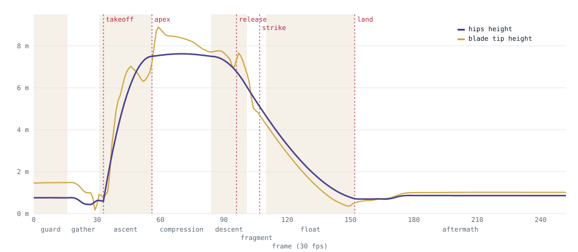

Hollow devlog · Nov 17, 2026
Choreography Engine: Phase 1
A move is written once as a JSON spec. The engine builds the body animation, the game clip, the skill's data and a test from it.
Pipeline
One command: python3 tools/choreo/build.py moves/<move>.json --game
- Dump: exports the clips the spec uses from the game's motion-capture library (Godot).
- Solve: builds the body on the swordsman's rig in Blender. Outputs a baked rig ready for a cinematic, a timeline of events with per-frame hips, chest, head, hands, feet and blade, and the game's in-place clip.
- Game: builds the clip into the game and writes the skill's beats into its data.
- Test: plays the move in the real game and measures it against the spec's targets.
Clip catalogue
- All 452 library clips are read through the game skeleton and measured per frame: hip height, feet, hands, trunk pitch, roll and facing, and foot contact.
- Per clip: air time, flips, spins, strikes and their direction, kicks, hands on the ground.
- Each clip gets tags such as
flip_back,airborne,crouch_deep,strike_horizontal_rlandkick. - A spec can name a clip or query for one by tags, and refer to frames by detected events (
takeoff,apex,touchdown,strike) with offsets.
The spec
- events: named frames for effects, cameras, sound and the game.
- body: segments of motion capture, each mapped through a timing curve, with blends and legs from another clip.
- layers: pose mixes, bone rotations and breathing, each in an envelope.
- path: hip height keys, travel along the facing, and sway. Feet stay planted outside the airborne span.
- game: the skill, its beats, their timing and fields.
- targets: what the test checks.
First move: Falling Leaves
Falling Leaves is the first move rebuilt from a spec. The game clip it produces is byte-identical to the hand-made one.

Its test targets: apex at least 4.6 m, at least 2 m back, release above 4 m, one hit, landing 1.2–1.9 s after the hit, ending within 1 m of the start, under 7 s in total.
See the result in Animation Spotlight: Falling Leaves.